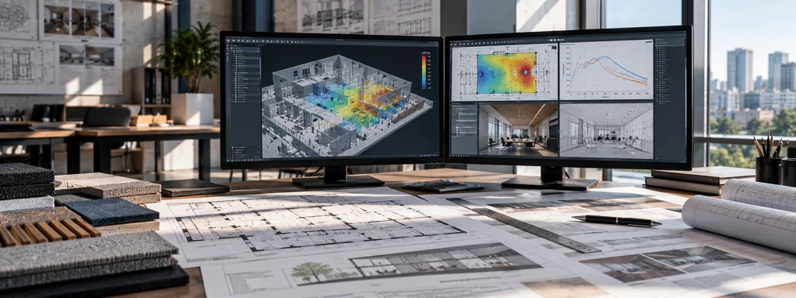
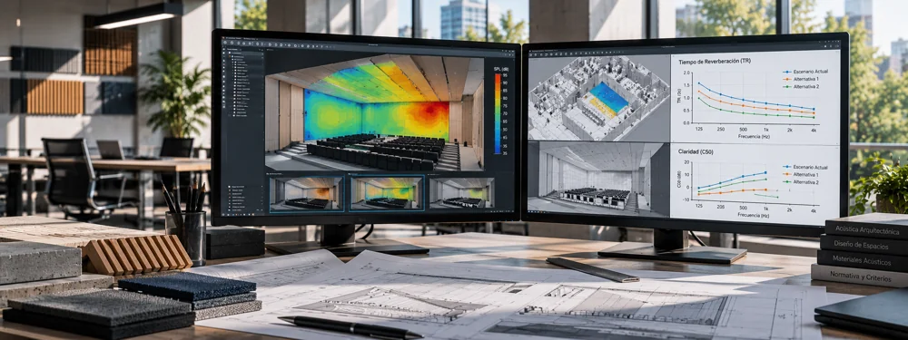

Falta de privacidad entre ambientes
Conversaciones, reuniones o actividades que se transmiten entre espacios y afectan la confidencialidad o el confort.
Consultoría e ingeniería acústica para integrar el confort y el aislamiento acústico desde el diseño.
Hablemos de tu proyectoVer cómo trabajamos ↓Acompañamos a estudios de arquitectura, desarrolladores y empresas en la definición de criterios acústicos, evaluación de alternativas constructivas y modelado de espacios, para anticipar problemas y alcanzar los resultados esperados antes de ejecutar la obra.
En arquitectura, los problemas acústicos muchas veces aparecen cuando las decisiones principales del proyecto ya fueron tomadas. Aislamiento entre ambientes, reverberación, privacidad, ruido de instalaciones y condiciones de uso pueden afectar directamente la calidad final del espacio.
Incorporar la acústica desde etapas tempranas permite anticipar conflictos, evaluar alternativas y evitar correcciones costosas una vez ejecutada la obra.
Conversaciones, reuniones o actividades que se transmiten entre espacios y afectan la confidencialidad o el confort.
Espacios donde el sonido persiste demasiado tiempo, generando ruido, fatiga y dificultades para comprender la palabra.
Tabiques, fachadas, entrepisos o cerramientos que no alcanzan el nivel de aislación requerido para el uso previsto.
Sistemas de climatización, sanitarios, equipos y otras instalaciones que afectan el confort acústico del espacio.
Alternativas de materiales o sistemas constructivos que necesitan ser evaluadas antes de incorporarse al proyecto.
Espacios terminados que no alcanzan los objetivos esperados y requieren diagnóstico y corrección.
La acústica es más fácil de resolver cuando forma parte del proyecto desde el principio.
Acompañamos el diseño arquitectónico mediante análisis, modelado acústico y evaluación de soluciones constructivas, con el objetivo de incorporar correctamente el confort y el aislamiento acústico desde las primeras etapas del proyecto.
Trabajamos sobre criterios de aislamiento entre ambientes, acondicionamiento acústico, control de reverberación, privacidad y ruido de instalaciones, evaluando alternativas antes de ejecutar la obra y ajustando cada solución a las necesidades reales del espacio.


Del diagnóstico a una decisión
técnicamente fundamentada.
Relevamos objetivos, usos, planos, criterios de diseño y requerimientos acústicos para definir correctamente el alcance.
Evaluamos las condiciones acústicas mediante cálculos, simulaciones y, cuando corresponde, mediciones sobre espacios existentes.
Comparamos alternativas constructivas y establecemos recomendaciones de aislamiento, acondicionamiento y control de instalaciones.
Integramos las definiciones acústicas al proyecto y brindamos soporte técnico durante las distintas etapas para mantener coherencia entre diseño y resultado.
Cada proyecto se aborda con un proceso claro, trazable y adaptable a su escala, complejidad y etapa de desarrollo.
Más de 15 años de experiencia en ingeniería acústica aplicada a proyectos arquitectónicos, acompañando equipos de diseño en la definición de criterios de aislamiento, acondicionamiento y confort acústico.
A lo largo de nuestra trayectoria profesional hemos participado en proyectos corporativos, hoteleros, institucionales y de grandes espacios, trabajando junto a estudios de arquitectura, desarrolladores y empresas para integrar la acústica desde el diseño y validar soluciones antes de su ejecución.


Oficinas corporativas · Hotelería · Auditorios y espacios culturales · Edificios institucionales · Espacios de uso público · Desarrollos de gran escala
Cuanto antes, mejor. Incorporar la acústica desde las primeras etapas permite evaluar alternativas de diseño y soluciones constructivas antes de que las decisiones queden condicionadas por la obra. También podemos intervenir en etapas avanzadas o sobre espacios existentes cuando es necesario diagnosticar y corregir un problema.
Sí. Podemos evaluar alternativas ya propuestas, comparar su comportamiento acústico y determinar si resultan adecuadas para los objetivos del proyecto, proponiendo ajustes cuando sea necesario.
Nuestra base operativa se encuentra en Buenos Aires, pero trabajamos en proyectos de toda la región, combinando análisis y desarrollo remoto con visitas a obra, relevamientos y mediciones cuando el proyecto lo requiere.
Ya sea en etapa de diseño, durante la obra o en un espacio existente, podemos ayudarte a evaluar la situación, definir criterios y encontrar la solución acústica adecuada para cada necesidad.
Hablemos de tu proyecto¿Tenés un proyecto o necesitás resolver un problema técnico? Contanos brevemente la situación y coordinemos una conversación.
hola@sabater.com.ar ↗Buenos Aires, Argentina
Proyectos en todo el país.